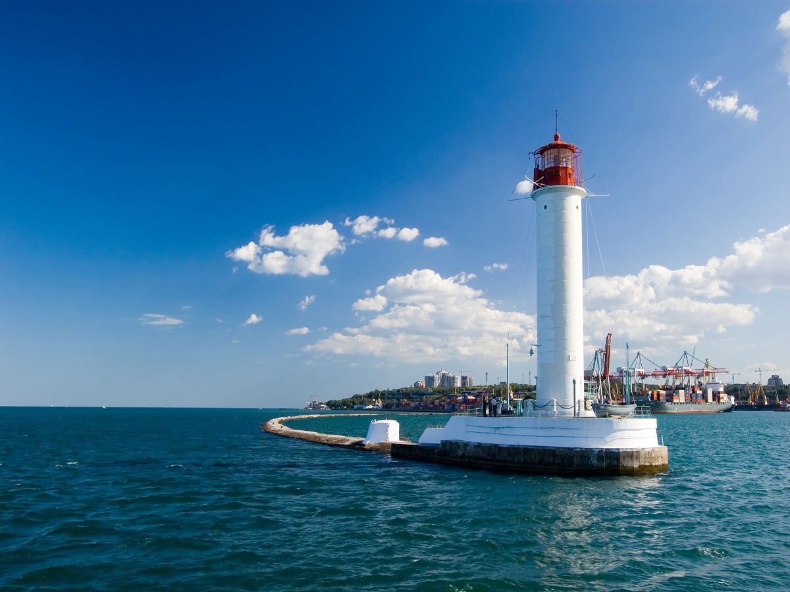

Одеса — це місто з неповторним шармом і яскравою атмосферою, що поєднує в собі дух портового мегаполісу та курортної зони. Вулиці Одеси наповнені гумором, історією та архітектурними шедеврами, як-от Оперний театр чи Потьомкінські сходи. Прогулянки вздовж набережної або вуличками Дерибасівської дають можливість відчути справжню одеську гостинність. Одеса також відома своїм унікальним колоритом, теплим морем і чудовими пляжами, що робить її ідеальним місцем для відпочинку та натхнення.
